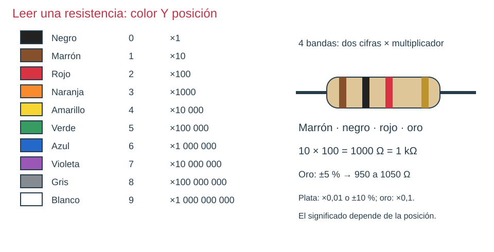
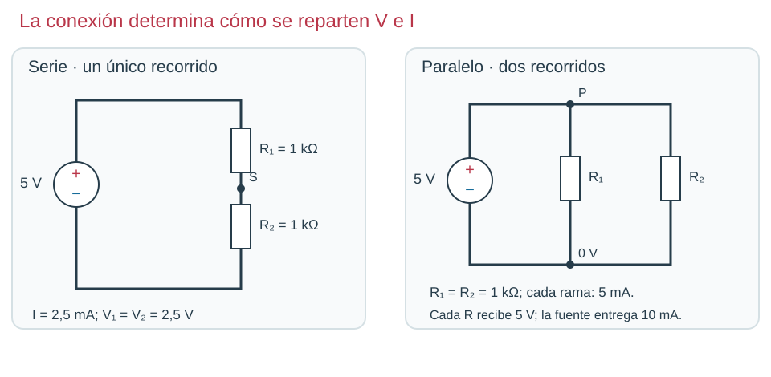

Contenido
1. El código de colores
Las resistencias son tan pequeñas que su valor no se escribe: se pinta con bandas de colores. Tinkercad también las dibuja así. Pon a la derecha la banda dorada o plateada (la tolerancia) y lee de izquierda a derecha.

La tolerancia dice cuánto puede alejarse el valor real del escrito. Una de 1000 Ω ± 5 % puede medir entre 950 y 1050 Ω y está bien.
Ahora tú. Lee rojo, rojo, marrón, oro. ¿Está bien una resistencia así que mide 218 Ω?
Ver solución
Rojo (2), rojo (2), marrón (× 10): 22 × 10 = 220 Ω. El 5 % de 220 son 11 Ω: vale entre 209 y 231 Ω. 218 Ω está dentro: está bien.
2. Serie y paralelo
Dos resistencias están en serie cuando van una detrás de otra, en un único camino: la misma corriente pasa por las dos. Están en paralelo cuando sus dos extremos están unidos a los mismos dos nodos: la corriente se reparte entre dos caminos y las dos reciben la misma tensión.

| Serie | Paralelo (dos resistencias) | |
|---|---|---|
| Resistencia total | R = R₁ + R₂ | R = (R₁ · R₂) / (R₁ + R₂) |
| Corriente | La misma en las dos | Se reparte: la total es la suma de las ramas |
| Tensión | Se reparte entre las dos | La misma en las dos |
| Con dos de 1 kΩ a 5 V | 2000 Ω · 2,5 mA · 2,5 V cada una | 500 Ω · 10 mA en total · 5 mA por rama |
3. Compruébalo en Tinkercad
- Crea un circuito nuevo, S3 serie paralelo, con una fuente de 5 V.
- Monta dos resistencias de 1 kΩ en serie. Inicia la simulación y lee en la pantalla de la fuente la corriente que entrega.
- Detén y recoloca las dos resistencias en paralelo. Vuelve a leer la corriente de la fuente.
- Con el multímetro en Voltaje, mide la tensión de cada resistencia en los dos montajes.
Compruébalo: 2,5 mA en serie y 10 mA en paralelo; 2,5 V en cada resistencia en serie y 5 V en paralelo.
| Lo que ves | Qué compruebas |
|---|---|
| En paralelo marca 2,5 mA | Seguramente siguen en serie: comprueba que los dos extremos de cada resistencia llegan a los mismos dos nodos. |
Ahora tú. Informe, apartado 1: con 1 kΩ y 2 kΩ a 6 V, calcula la corriente total y la tensión de cada una en serie y en paralelo. Compruébalo en Tinkercad.
Ver solución
Serie: 3000 Ω, 2 mA; 2 V en la de 1 kΩ y 4 V en la de 2 kΩ. Paralelo: 666,7 Ω, 9 mA en total (6 mA y 3 mA); las dos reciben 6 V.
Compruébalo
¿Es propio de la conexión en serie o en paralelo?